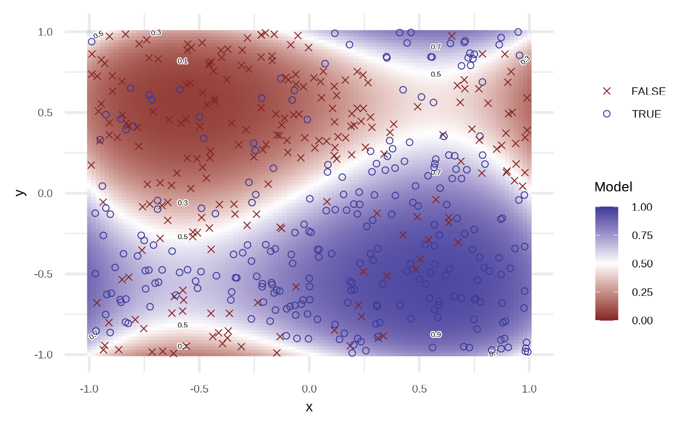
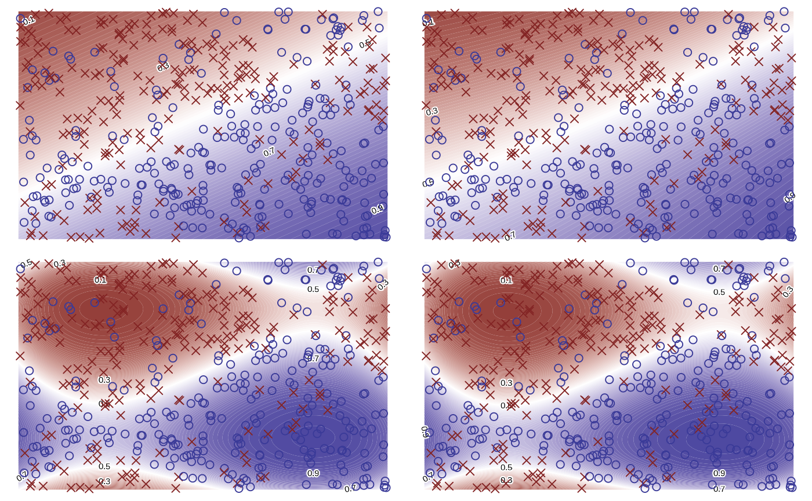
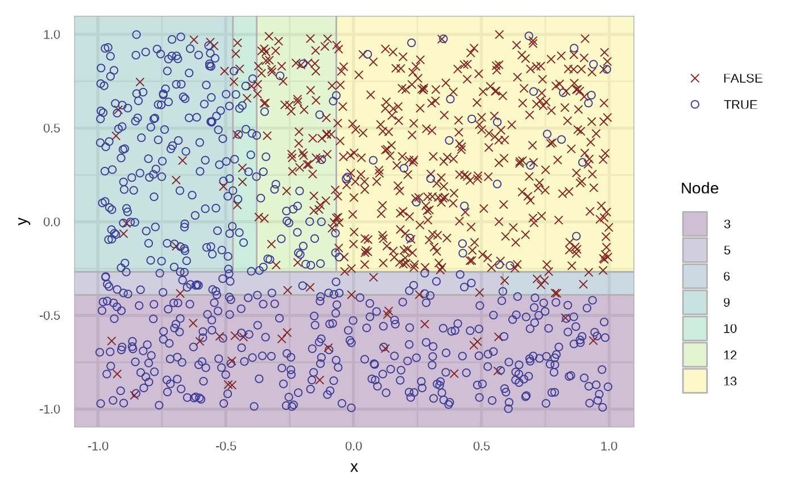
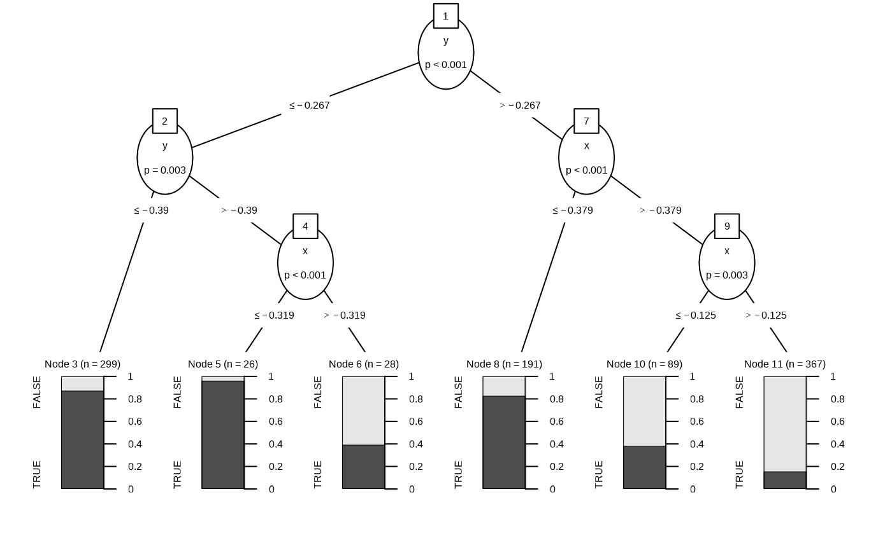
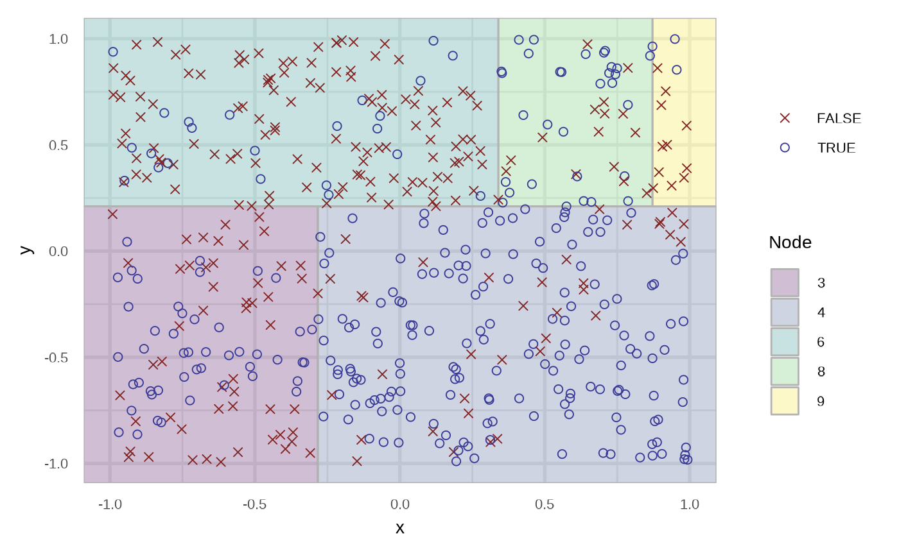
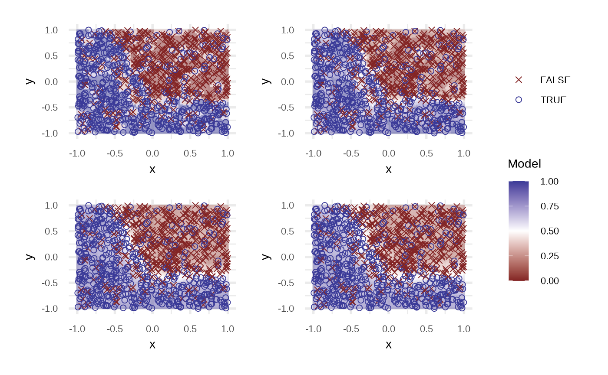
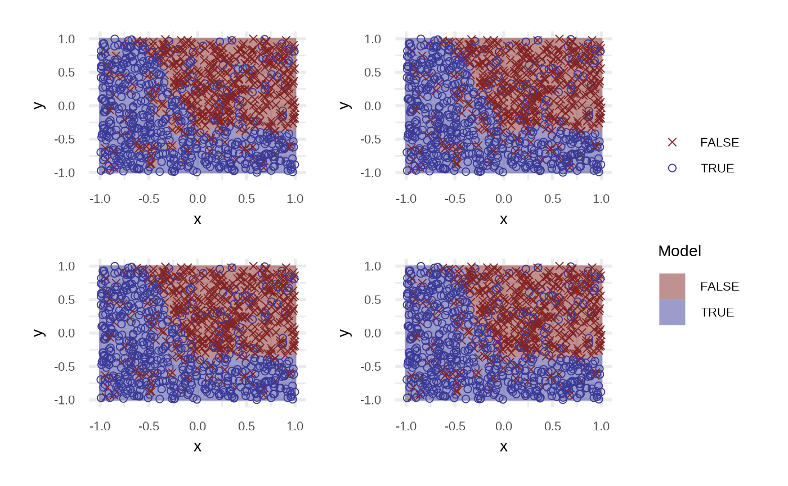

Binary classification
Source:vignettes/articles/Binary-classification.Rmd
Binary-classification.RmdGenerating data set
The main function is sim_response_xy, you need to define:
- A number of observations to simulate.
- Distributions to sample \(x\) and \(y\). For example
purrr::partial(runif, min = -1, max = 1). - A function to define the relation between the response and the \(x\) and \(y\), for example
function(x, y) x > yThis function must return a logical value. - A number to define the noise in the generated data.
library(klassets)
library(ggplot2)
library(patchwork)
set.seed(123)
df <- sim_response_xy(n = 500)
df
#> # A tibble: 500 × 3
#> response x y
#> <fct> <dbl> <dbl>
#> 1 FALSE -0.425 -0.293
#> 2 TRUE 0.577 -0.267
#> 3 FALSE -0.182 -0.426
#> 4 TRUE 0.766 -0.840
#> 5 TRUE 0.881 -0.269
#> 6 FALSE -0.909 -0.644
#> 7 FALSE 0.0562 0.0721
#> 8 TRUE 0.785 0.00790
#> 9 TRUE 0.103 0.890
#> 10 TRUE -0.0868 -0.317
#> # … with 490 more rows
plot(df)
df2 <- sim_response_xy(
n = 1000,
x_dist = purrr::partial(runif, min = -1, max = 1),
relationship = function(x, y) sqrt(abs(x)) - x - 0.5 > sin(y),
noise = 0.15
)
plot(df2)
Apply classification algorithms
Logistic Regression
df_lr <- apply_logistic_regression(df2)
df_lr
#> # A tibble: 1,000 × 4
#> response x y prediction
#> <fct> <dbl> <dbl> <dbl>
#> 1 FALSE 0.876 0.707 0.0702
#> 2 FALSE 0.976 0.332 0.113
#> 3 FALSE -0.0874 0.467 0.389
#> 4 TRUE -0.539 -0.371 0.870
#> 5 FALSE 0.391 0.335 0.261
#> 6 FALSE 0.113 -0.0722 0.551
#> 7 TRUE 0.169 0.301 0.357
#> 8 TRUE -0.133 0.572 0.362
#> 9 FALSE -0.148 0.803 0.274
#> 10 FALSE 0.194 0.0548 0.457
#> # … with 990 more rows
plot(df_lr)
By default the model use order = 1 of the variables, i.e, response ~ x + y. We can get a better fit if we increase the order.
df_lr2 <- apply_logistic_regression(df2, order = 5, stepwise = TRUE)
attr(df_lr2, "model")
#>
#> Call: glm(formula = response ~ x + y + x_2 + x_4 + y_2 + y_4, family = binomial,
#> data = df)
#>
#> Coefficients:
#> (Intercept) x y x_2 x_4 y_2
#> -1.183 -1.891 -2.065 4.818 -3.722 3.881
#> y_4
#> -2.762
#>
#> Degrees of Freedom: 999 Total (i.e. Null); 993 Residual
#> Null Deviance: 1378
#> Residual Deviance: 942.4 AIC: 956.4
plot(df_lr2)
Classification Tree partykit::ctree
df_rt <- apply_classification_tree(df2)
plot(df_rt)
The region are filled with the probability of the respective node. We can specify the type of the prediction using the type argument. In the case of response.
df_rt_response <- apply_classification_tree(df2, type = "response")
df_rt_response
#> # A tibble: 1,000 × 4
#> response x y prediction
#> <fct> <dbl> <dbl> <fct>
#> 1 FALSE 0.876 0.707 FALSE
#> 2 FALSE 0.976 0.332 FALSE
#> 3 FALSE -0.0874 0.467 FALSE
#> 4 TRUE -0.539 -0.371 TRUE
#> 5 FALSE 0.391 0.335 FALSE
#> 6 FALSE 0.113 -0.0722 FALSE
#> 7 TRUE 0.169 0.301 FALSE
#> 8 TRUE -0.133 0.572 FALSE
#> 9 FALSE -0.148 0.803 FALSE
#> 10 FALSE 0.194 0.0548 FALSE
#> # … with 990 more rows
plot(df_rt_response)
And now for the node.
df_rt_node <- apply_classification_tree(df2, type = "node", maxdepth = 3)
df_rt_node
#> # A tibble: 1,000 × 4
#> response x y prediction
#> <fct> <dbl> <dbl> <int>
#> 1 FALSE 0.876 0.707 11
#> 2 FALSE 0.976 0.332 11
#> 3 FALSE -0.0874 0.467 11
#> 4 TRUE -0.539 -0.371 5
#> 5 FALSE 0.391 0.335 11
#> 6 FALSE 0.113 -0.0722 11
#> 7 TRUE 0.169 0.301 11
#> 8 TRUE -0.133 0.572 10
#> 9 FALSE -0.148 0.803 10
#> 10 FALSE 0.194 0.0548 11
#> # … with 990 more rows
plot(df_rt_node)

K Nearest Neighbours class::knn
# defaults to prob
apply_knn(df2)
#> # A tibble: 1,000 × 4
#> response x y prediction
#> <fct> <dbl> <dbl> <dbl>
#> 1 FALSE 0.876 0.707 0.6
#> 2 FALSE 0.976 0.332 0.9
#> 3 FALSE -0.0874 0.467 0.9
#> 4 TRUE -0.539 -0.371 1
#> 5 FALSE 0.391 0.335 0.9
#> 6 FALSE 0.113 -0.0722 1
#> 7 TRUE 0.169 0.301 0.7
#> 8 TRUE -0.133 0.572 0.8
#> 9 FALSE -0.148 0.803 0.8
#> 10 FALSE 0.194 0.0548 0.8
#> # … with 990 more rows
apply_knn(df2, type = "response")
#> # A tibble: 1,000 × 4
#> response x y prediction
#> <fct> <dbl> <dbl> <fct>
#> 1 FALSE 0.876 0.707 FALSE
#> 2 FALSE 0.976 0.332 FALSE
#> 3 FALSE -0.0874 0.467 FALSE
#> 4 TRUE -0.539 -0.371 TRUE
#> 5 FALSE 0.391 0.335 FALSE
#> 6 FALSE 0.113 -0.0722 FALSE
#> 7 TRUE 0.169 0.301 FALSE
#> 8 TRUE -0.133 0.572 FALSE
#> 9 FALSE -0.148 0.803 FALSE
#> 10 FALSE 0.194 0.0548 FALSE
#> # … with 990 more rows
plot(apply_knn(df))
neighbours <- c(3, 10, 50, 100)
purrr::map(neighbours, apply_knn, df = df_lr2) |>
purrr::map(plot) |>
purrr::reduce(`+`) +
patchwork::plot_layout(guides = "collect")
purrr::map(neighbours, apply_knn, df = df_lr2, type = "response") |>
purrr::map(plot) |>
purrr::reduce(`+`) +
patchwork::plot_layout(guides = "collect")